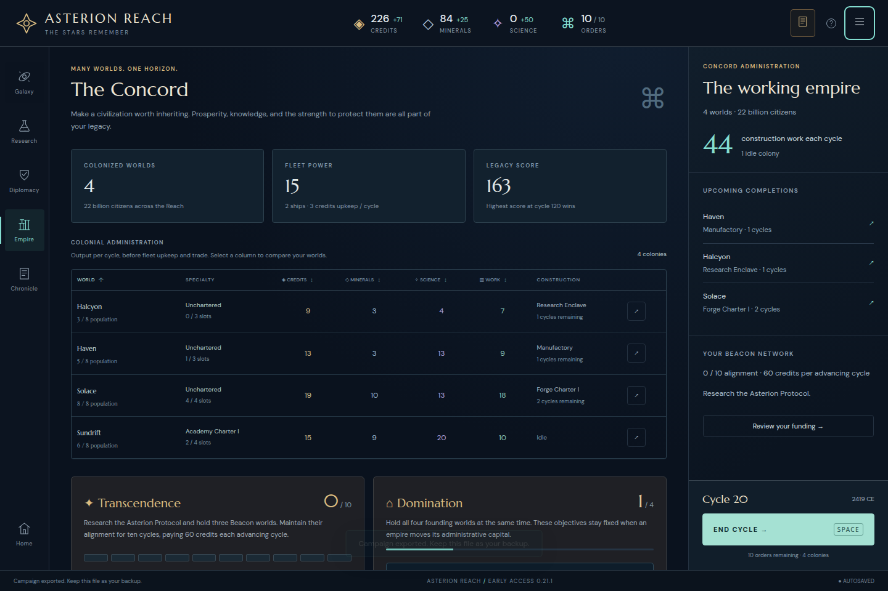

Original cycle 30 UI checkpoint

Asterion Reach · Independent frozen phase validation
The real default ASTERION opening’s unedited cycle 12 export resumes under 0.21.1 rules. Successful UI receipts reproduce both actual cycle 20 and cycle 30 exports exactly, without state patches or invented batch completion.
This report starts at the actual cycle 12 input. It does not claim reconstruction of cycles 1–12, a new campaign from scratch, or a completed campaign. The frozen endpoint is 30, with no winner. Later live play is outside this phase.
All 86 initial/post-command states validate with finite nonnegative resources and orders. All 52 post-import observations match turn plus credits, credit income, minerals, mineral income, science, science income, remaining orders and order capacity. Two default-startup observations are excluded. The 61 original continuation files and original cycle 12 input remain unchanged.
The actual cycle 30 empire has 4 worlds, 30 population, 709 credits, 90 minerals, 84 credit income, 37 mineral income, 82 science income and 10 orders. These are checkpoint facts, not a future projection.
Exact interpretation notes · Normalized commands · Other successful UI receipts

| move | 16 |
| planRoute | 8 |
| continueRoute | 24 |
| endTurn | 18 |
| develop | 3 |
| colonize | 1 |
| research | 3 |
| build | 9 |
| hold | 1 |
| merge | 1 |
| leadDefense | 1 |
Committed rules 648c1f53de5f37d4df012c6b7e9994fb9574819c have the same 14 engine modules as the frozen 0.21.1 build base 3c6e822211e380510ddd387a24d3f021dc4bb36b. Source and compiled asset hashes are pinned separately.
Original cycle 12 bytes:d8bf73702ea980fd3b3f7079fd7a31fe0e2d09ce4bdaa1704b68355bef14a45c
Actual cycle 20 bytes:492a718ca75568222d5d41cff5eaec4b30409857729bfa082635d18313b815c9
Actual cycle 30 bytes:9909263a0a283336ebb7b18dbccd33a5174cf610ad4aa5aca7fce62f34db4474
Comparison uses the complete JSON.stringify state after parsing, preserving field and array order; no saved fields are stripped. Every command also compares its return value and resulting full state after an independent JSON restore.
Complete results · Return values/state hashes · Visible observation checks · Original input fingerprints · Rules/UI/build pins · Review artifact manifest
node replay.mjs --repo /path/to/repo --original /path/to/frozen-continuation --input /path/to/original-cycle12.json --build /path/to/frozen-0.21.1-build --out /tmp/asterion-phase30-rerun
Runner · Requirements and boundaries
No browser automation, counterfactual campaign, AI instrumentation or strategy recommendation was added to this reconstruction.